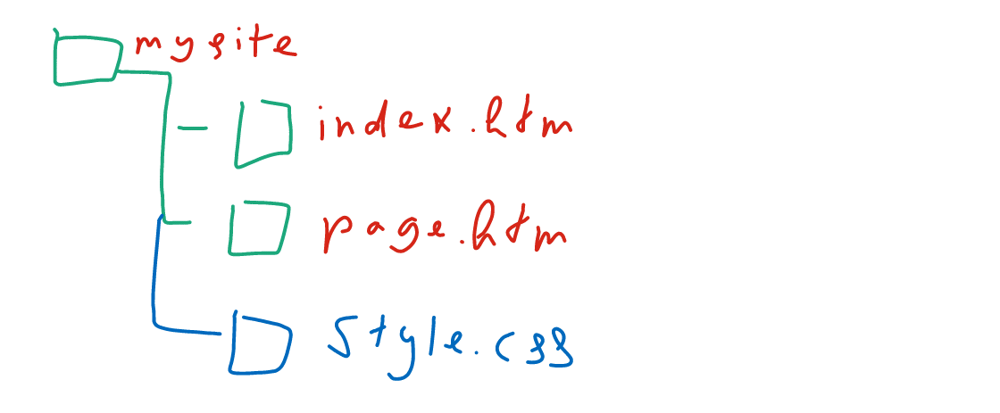
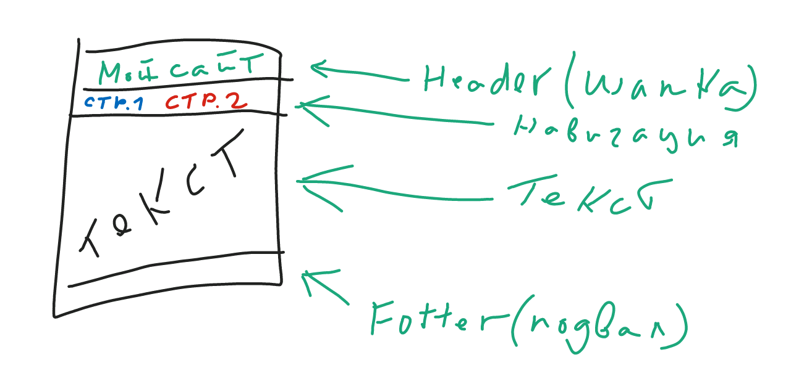

Итоговый проект - Октябрь
Задание: Создать сайт из 2-х страниц
Шаги
- Подготовка:
- Создать папку последующей структурой.

- Создать папку
october_YOUR_NAME
- Создать файл index.html
- Создать файл page.html
- Создать файл style.css
- Создать шаблон страницы со следующей структурой(пример).

- Создать первую страницу.
В качестве контента первой страницы можно использовать итоговую работу первого месяца:
- Создать вторую страницу. Страница должна содержать:
- Заголовок
- Картинку (любую)
- Описание картинки.(любой текст)
- Наполнить CSS файл стилями из образца
- Подключить CSS файл к обеим страницам.
- Применить стили к страницам.
- Добавить минимум два класса в стили и применить созданные классы к страницам.
- Добавить в архфив(.zip или .rar)
- Выслать мне на e-mail